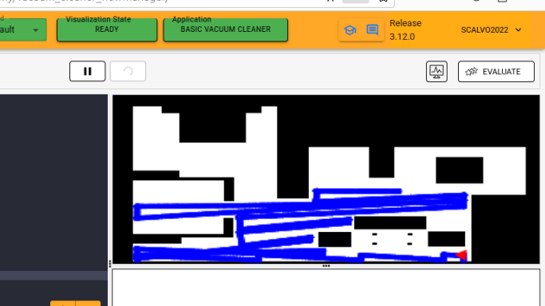
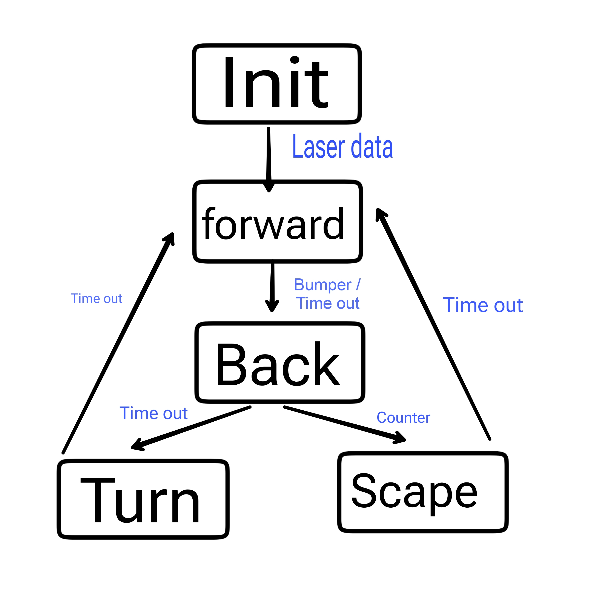
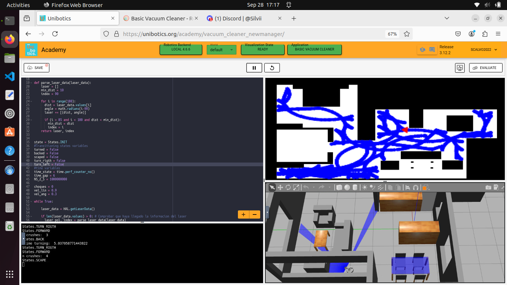
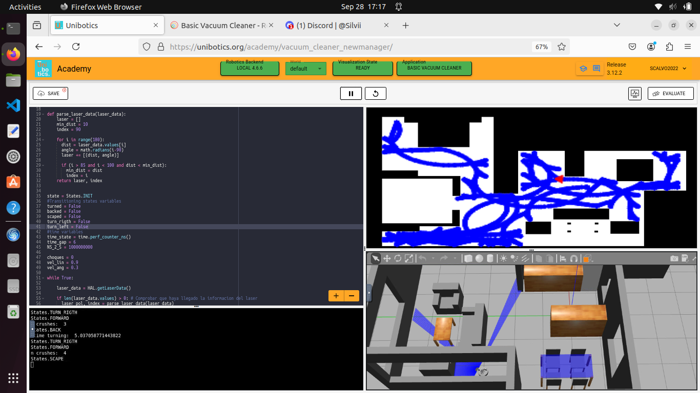

ROOMBA - VACUUM CLEANER
Silvia Calvo Cabello
Silvia Calvo Cabello
La siguiente práctica consiste en crear un programa para un robot aspiradora que solo consta de los siguientes sensores: Bumper, Laser (180º) y recorra la mayor cantidad de zonas de la casa como sea posible en el menor tiempo posible. Para el control de la lógica se usará una Máquina de Estados Finitos, cuyos estados variarán según la versión del algoritmo implementado.
Para lograr el objetivo se crearon varios intentos de algoritmos que pudiesen recorrer toda la casa. A continuación, explico y muestro cada uno de los intentos y sus resultados, así como los problemas que se fueron resolviendo hasta llegar al algoritmo final.
ALGORITMO Nº1 SALA VACÍA
Mi primer intento fue crear un algoritmo simple que recorriera una sala vacía mediante el siguiente patrón: Avanzar hasta obstáculo, girar 90 grados, avanzar 2 segundos, girar 90 grados (alternando dirección).
Problemas:
- No se puede calcular correctamente el giro de 90 grados en cualquier disposición.
- Solo funciona bien en salas vacías sin obstáculos.
ALGORITMO Nº2 ESTADO RECUPERACIÓN
Se añadió un estado que consiste en retroceder y girar ciertos grados al chocar con un obstáculo, permitiendo cubrir gran parte del mapa.
Problemas:
- Funciona con obstáculos, pero no con esquinas, ya que al girar y avanzar vuelve a chocar.
ALGORITMO Nº3 ESTADO ESCAPE
Se introdujo el estado SCAPE, que intenta salir de esquinas usando el láser para medir distancias a las paredes y encontrar huecos.Problemas:
- No llegaba a todas las salas.

ALGORITMO Nº4 RANDOM
Se randomizó el programa para que no se ajustara a un mapa en concreto. El robot avanza con velocidad angular y lineal, retrocede y gira un tiempo aleatorio entre 4 y 5.5 segundos al chocar. Si se choca muy seguido, pasa al estado SCAPE mencionado anteriormente.
A veces el robot llega a todas las salas y otras veces no.
 


VIDEO DE MUESTRA
A partir del día 26 de septiembre, la granja de ordenadores de la universidad dejó de funcionar, por lo que las pruebas se realizaron con mi ordenador, siendo su rendimiento mucho más bajo. A continuación se muestra un video (velocidad x4) donde la pantalla de gazebo y la visualización de zonas recorridas van desfasadas.Ver el video